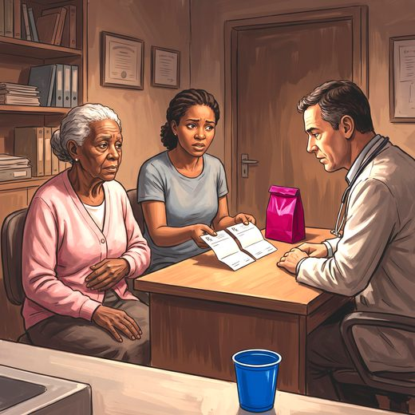

Consulta rápida à beira do leito
Condutas, doses e interações.
Referências da aula · 7
- 2023 American Geriatrics Society Beers Criteria® Update Expert Panel. American Geriatrics Society 2023 updated AGS Beers Criteria® for potentially inappropriate medication use in older adults. J Am Geriatr Soc. 2023;71(7):2052-81. PMID 37139824. doi:10.1111/jgs.18372.PubMedDOI
- O’Mahony D, Cherubini A, Guiteras AR, et al. STOPP/START criteria for potentially inappropriate prescribing in older people: version 3. Eur Geriatr Med. 2023;14(4):625-32. PMID 37256475. doi:10.1007/s41999-023-00777-y.PubMedDOI
- Gill SS, Mamdani M, Naglie G, et al. A prescribing cascade involving cholinesterase inhibitors and anticholinergic drugs. Arch Intern Med. 2005;165(7):808-13. PMID 15824303. doi:10.1001/archinte.165.7.808.PubMedDOI
- Rochon PA, Gurwitz JH. The prescribing cascade revisited. Lancet. 2017;389:1778-80. PMID 28495154. doi:10.1016/S0140-6736(17)31188-1.PubMedDOI
- Nambiar AK, Arlandis S, Bø K, et al. European Association of Urology Guidelines on the Diagnosis and Management of Female Non-neurogenic Lower Urinary Tract Symptoms. Part 1: Diagnostics, Overactive Bladder, Stress Urinary Incontinence, and Mixed Urinary Incontinence. Eur Urol. 2022;82(1):49-59. PMID 35216856. doi:10.1016/j.eururo.2022.01.045.PubMedDOI
- Cameron AP, Chung DE, Dielubanza EJ, et al. The AUA/SUFU guideline on the diagnosis and treatment of idiopathic overactive bladder. J Urol. 2024;212(1):11-20. PMID 38651651. doi:10.1097/JU.0000000000003985.PubMedDOI
- Gibson W, Johnson T, Kirschner-Hermanns R, et al. Incontinence in frail elderly persons: Report of the 6th International Consultation on Incontinence. Neurourol Urodyn. 2021;40(1):38-54. PMID 33085806. doi:10.1002/nau.24549.PubMedDOI
Documentos oficiais
Leis e publicações do Ministério da Saúde sobre o cuidado da pessoa idosa, de acesso livre.
Abrir os documentos